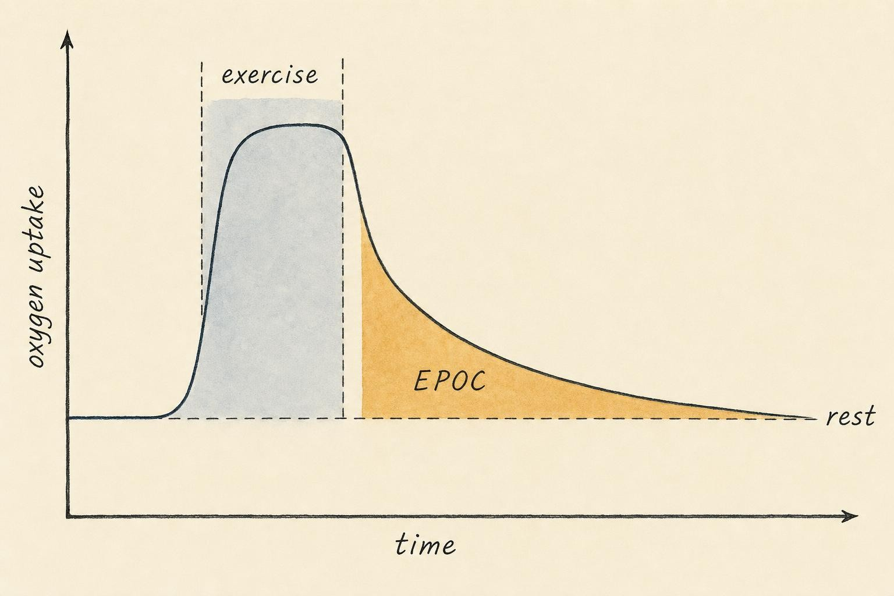

The Afterburn Audited: EPOC, Metabolic Rate, and Honest Numbers
Accounting for a whole day's energy, with a skeptic's ledger.
A treadmill console flashes a number when you step off: 420 calories. A poster on the gym wall promises that the real magic happens later, that a single hard session keeps your body "burning for up to 48 hours." The claim is seductive because it flatters both effort and impatience. Do the hard thing once, and the payoff keeps arriving while you sleep. If that were true, exercise would be the master lever of the whole energy economy, and the rest of your day would barely matter.
It is not true, or rather, it is true only in a small and honest way that the marketing has inflated beyond recognition. This chapter zooms out from the single effort you have studied so far to the accounting of energy across an entire day. We will grade the afterburn against the evidence, build the full budget of daily energy expenditure from its parts, and treat the popular metabolic myths with the same insistence on honest numbers that we brought to the myth of lactic acid.
This chapter builds that full accounting from the ground up. We start with the afterburn itself, defining it precisely and tracing the physiology that produces it before grading its size against the best available evidence. We then assemble the complete daily energy budget from its four constituent parts, resting metabolism, the cost of digestion, deliberate exercise, and the often-overlooked movement of ordinary life, so that a single workout can be seen in its true proportion. From there we examine how any of these numbers are actually measured, and why every one of them carries real uncertainty. We close by applying the same evidentiary standard to two of the most persistent myths in popular fitness culture, starvation mode and metabolic damage, separating the genuine physiology from the exaggeration built on top of it.
The Afterburn: What It Is Before We Judge Its Size
When you finish a bout of exercise, your oxygen consumption does not drop instantly back to its resting value. It stays elevated for a while, sometimes minutes, sometimes hours, as your body pays back a set of costs that accumulated during the effort. That elevated post-exercise oxygen uptake is called excess post-exercise oxygen consumption, abbreviated as EPOC and popularly called the afterburn. Because burning oxygen means spending energy, EPOC represents genuine calories used after the workout has ended.
What are you paying for? Several restoration processes run at once. Your muscles resynthesize the phosphocreatine they depleted during high-intensity effort. Your body clears elevated metabolic byproducts and returns oxygen to the myoglobin and hemoglobin that carry it. Body temperature, which rose during exercise, must return to baseline, and the elevated heart rate, breathing rate, and circulating hormones such as the catecholamines all cost energy to sustain until they subside. In the hours that follow harder efforts, the repair and remodeling of stressed tissue adds a smaller ongoing cost.
Researchers describe EPOC as having two phases. A fast component resolves within roughly the first hour and accounts for most of the effect, driven largely by phosphocreatine restoration, oxygen store replenishment, and the immediate cardiorespiratory recovery. A slow component can linger at a low level for many hours after very demanding sessions, tied to elevated body temperature, hormonal activity, and tissue repair. The existence of EPOC is not in dispute. The dispute is entirely about magnitude.
From oxygen debt to EPOC: a concept that got more honest
The phenomenon was not always called EPOC. In the 1920s, the physiologist A. V. Hill and his collaborators described what they called oxygen debt, the idea that anaerobic exercise created a deficit of oxygen that the body then repaid during recovery, with the repayment assumed to be tied closely to reconverting accumulated lactate back into glycogen. In the 1930s, Rodolfo Margaria and colleagues refined this into a fast, alactic component and a slower, lactic component, a two-phase model that still echoes in how EPOC is described today. Later research overturned the specific mechanism behind the old model. As earlier chapters in this course established, lactate is not a metabolic waste product awaiting repayment; it is a fuel that working muscle and other tissues actively use, and the old idea of a precisely repaid lactate debt does not hold up. The field's shift from the term oxygen debt to the more neutral excess post-exercise oxygen consumption reflects this correction. EPOC describes the same observable pattern, elevated oxygen use after exercise ends, without asserting the specific, and partly incorrect, accounting mechanism that the older term implied.
The fast component: phosphocreatine and oxygen stores
Muscle cells store a limited reserve of adenosine triphosphate, abbreviated as ATP, the molecule whose breakdown directly powers muscle contraction. To keep ATP available during brief, intense efforts, muscle also stores phosphocreatine, a compound that can rapidly donate a phosphate group to rebuild ATP as fast as it is used. During hard exercise this phosphocreatine store is drawn down, and once exercise ends it must be resynthesized, a process that itself requires ATP generated aerobically. Phosphocreatine resynthesis is fast, with roughly half of the store rebuilt within about thirty seconds and the great majority restored within a few minutes, but rebuilding it draws on oxidative metabolism and therefore keeps oxygen consumption elevated immediately after exercise. A second, smaller contributor is the replenishment of oxygen bound to myoglobin in muscle and hemoglobin in blood, both of which are partially depleted during vigorous effort and refilled quickly once the demand for oxygen at the muscle eases. A third contributor is simply the elevated work of breathing and circulation immediately after exercise: the respiratory muscles and the heart are still working harder than at rest, and that work itself consumes oxygen, adding a further, brief cost on top of the recovery processes it accompanies. Together these fast processes explain why EPOC is largest in the first few minutes after exercise and why it decays quickly toward baseline within about an hour for most efforts.
The slow component: temperature, hormones, and tissue repair
After harder or longer sessions, a smaller, longer-lasting elevation in oxygen consumption can persist for hours, and it has a different set of causes. Body temperature rises during vigorous exercise and takes time to return to baseline, and because the rate of chemical reactions, including metabolic reactions, increases with temperature (a relationship physiologists describe with a temperature coefficient known as Q10), a body that is still slightly warmer than resting baseline is, quite literally, running its metabolism slightly faster than normal until it cools. Catecholamines, meaning epinephrine and norepinephrine, released in large amounts during intense exercise, remain elevated in the blood for a period afterward and directly raise metabolic rate, partly by stimulating the breakdown of stored fat (lipolysis) and partly by keeping heart rate and breathing elevated. Very demanding exercise also raises cortisol, another hormone that supports this elevated metabolic state during recovery. Muscle glycogen, the storage form of glucose depleted during longer or harder exercise, is resynthesized during recovery at some energetic cost, and there is a smaller ongoing cost from substrate cycling, in which the body simultaneously breaks down and resynthesizes triglycerides and free fatty acids rather than doing either process alone. Finally, particularly demanding or unfamiliar exercise, especially exercise involving eccentric muscle contractions such as downhill running or the lowering phase of a heavy lift, produces microscopic tissue damage that triggers local inflammation and repair processes over the following hours, adding a further, modest metabolic cost. Each of these processes is genuine physiology. None of them, even added together, amounts to a large or long-lived effect for most training sessions, which is precisely the point the next section takes up.

The afterburn is the shaded area: real, but bounded by the curve's rapid return toward rest." data-image-idx="0" style="display:block;max-width:100%;max-height:75vh;height:auto;width:auto;margin:0 auto;cursor:pointer;">Grading the Afterburn Honestly
The definitive narrative review of the topic comes from Borsheim and Bahr (2003), who synthesized decades of measurements. Two relationships emerged clearly. First, EPOC magnitude rises with exercise intensity in a curved, accelerating fashion: harder efforts produce disproportionately more afterburn. Second, EPOC rises with exercise duration in a more nearly straight-line fashion. Their most consequential conclusion, though, was the one the marketing ignores: low-intensity or short exercise produces minimal sustained afterburn. Intensity is the single strongest lever, but you have to push genuinely hard to move it far.
A few years later, Laforgia and colleagues (2006) audited the older literature and found that the early, optimistic estimates rested on flawed protocols, including measurements that failed to let subjects reach a true resting baseline before exercise and that extrapolated brief post-exercise readings across the whole day. When they examined the better-controlled modern studies, they confirmed the accelerating relationship between intensity and afterburn but reached a blunt verdict: "optimism regarding an important role for the EPOC in weight loss is generally unfounded." They added a practical caveat that deserves emphasis. The exercise intensities and durations required to generate a large, prolonged afterburn are typically intolerable for people who are not trained athletes.
How big is the effect in ordinary units? A systematic review by Panissa and colleagues (2020) pooled twenty-two studies comparing the afterburn after high-intensity interval exercise, moderate-intensity continuous exercise, and sprint intervals. For shorter sessions, the afterburn averaged about 136 kilojoules after high-intensity interval work and about 101 kilojoules after moderate continuous work. Even the largest values, from long-duration high-intensity interval sessions, averaged about 289 kilojoules. To translate, 289 kilojoules is roughly 69 kilocalories, the food energy in a small banana, and that was the high end after a punishing session. The typical afterburn is smaller still. Panissa and colleagues also documented enormous methodological variability across studies, which is itself a warning: when measured effects are small, differences in protocol easily swamp the signal.
Why intensity dominates duration
The accelerating relationship between intensity and EPOC has a mechanistic explanation, not just a statistical one. As exercise intensity climbs toward and past the range often described as seventy to eighty percent of maximal oxygen uptake, a progressively larger share of ATP regeneration shifts toward phosphocreatine breakdown and anaerobic glycolysis, both of which create larger post-exercise obligations to resolve: more phosphocreatine to resynthesize, more lactate to shuttle and oxidize, a larger rise in core temperature, and a bigger catecholamine surge. Duration matters as well, but its effect is closer to linear: doing more repetitions of the same demand produces proportionally more of the same recovery cost, without the same compounding acceleration that intensity produces. This is why the largest EPOC values in the literature come specifically from sessions that combine both high intensity and meaningful duration, the exact combination that is hardest for most people to sustain, and hardest to repeat day after day. Panissa and colleagues' "long high-intensity interval" category represents close to the ceiling of what ordinary training can produce, and even that ceiling sat under 300 kilojoules.
Putting the numbers in context
It is worth translating these numbers into something felt rather than abstract. A typical adult's total daily energy intake runs somewhere around two thousand to two thousand five hundred kilocalories. Even the largest EPOC value Panissa and colleagues reported, about 69 kilocalories, amounts to less than four percent of that daily total, and the more typical values, in the twenty to thirty kilocalorie range, amount to roughly one percent. Compare that to the uncertainty in almost any calorie estimate you will encounter, discussed in detail later in this chapter, and the afterburn effectively disappears into the noise for most training. It is also worth asking where the inflated claims come from. Wearable devices and gym equipment that display an "afterburn" or "calories burned after your workout" figure typically extrapolate from heart-rate-based formulas that were validated, if at all, in short controlled studies and then generalized broadly and often generously. A formula tuned to make a workout look more rewarding, or a marketing claim built to sell a class package, has every incentive to round up. The physiology underneath the claim is real. The number attached to it in a sales pitch usually is not.
So the honest grade is this. The afterburn is real, it scales with how hard and how long you work, and it is largest after intense efforts. But for the great majority of activity that most people can actually sustain, it is a modest add-on measured in the tens of kilocalories, not a fat-loss engine that runs for two days. The "48 hours of burning" claim takes the faint, low-level slow component that appears only after extreme sessions and pretends it is both large and universal. It is neither.
Building the Whole Budget: Total Daily Energy Expenditure
If the afterburn is a small line item, where does the day's energy actually go? To answer that we need the full ledger. The sum of all the energy your body spends in a twenty-four-hour period is called total daily energy expenditure, abbreviated as TDEE. It has four components, and understanding their relative sizes cures most of the intuitions that the fitness industry exploits.
Before breaking the day into its parts, it helps to name the principle underneath all of them. The first law of thermodynamics states that energy is neither created nor destroyed, only converted between forms or moved between stores. Applied to a living body, this becomes the energy balance equation: the energy taken in as food must equal the energy spent as heat and work, plus or minus any energy added to or withdrawn from the body's tissue stores. Total daily energy expenditure is the spending side of that equation. Every myth in this chapter, including the afterburn's exaggeration and the exaggeration of starvation mode discussed later, ultimately amounts to someone claiming that this simple accounting can be bent further than the physiology actually allows.
Component one: resting metabolism
The largest slice is the energy your body spends simply to stay alive. Your heart pumps, your kidneys filter, your brain signals, your cells maintain the electrical gradients across their membranes, and all of this costs energy even when you lie perfectly still. Measured under the strictest possible conditions, which means after an overnight fast, upon waking, in a thermally neutral room, with no prior physical activity, that cost is called your basal metabolic rate, abbreviated as BMR. Because those laboratory conditions are difficult to achieve, most measurements are made under slightly less strict conditions and are reported as resting metabolic rate, abbreviated as RMR, which runs a few percent higher than true basal metabolic rate. The two terms are often used loosely, but the distinction is the strictness of the resting conditions, not a difference in what is being measured.
In the review by Ohkawara and colleagues (2012), resting metabolic rate accounts for roughly sixty percent of total daily energy expenditure in a typical person. It is driven mostly by how much metabolically active tissue you carry, especially organs and skeletal muscle, which is why larger bodies and more muscular bodies have higher resting rates. This is also why the single most reliable determinant of your resting metabolism is not a supplement or a spice but the sheer quantity of living tissue that must be maintained.
The organs that dominate this resting cost are not the ones most people picture when they imagine "metabolism." The liver, brain, heart, and kidneys together make up only about five percent of total body mass, yet because each of these tissues has a very high metabolic rate per unit of mass, they collectively account for roughly sixty percent of resting energy expenditure. Skeletal muscle, by contrast, has a much lower metabolic rate per unit of mass, but because it makes up a much larger share of total body mass in most people, roughly forty percent, its aggregate contribution is still substantial, and it is the tissue most responsive to training. Fat mass has the lowest metabolic rate per unit of mass of any major tissue in the body. This is the biological reason that body composition, not simply body weight, predicts resting metabolic rate: two people of identical weight but different proportions of muscle and fat will have measurably different resting metabolic rates, because they are carrying different amounts of the tissue that actually drives the number.
Resting metabolic rate is also under active regulation rather than being a fixed property of your tissue alone. Thyroid hormone, particularly the active form triiodothyronine, sets the pace of cellular metabolism broadly across the body, and sympathetic nervous system activity modulates that pace further, which is part of why the same body can show a somewhat different resting metabolic rate under different conditions of stress, sleep, or energy availability. Genetics contributes measurable variation independent of body composition, and resting metabolic rate declines gradually with age, driven partly by the loss of muscle mass that often accompanies aging and partly by an independent aging effect on the metabolic rate of the tissue that remains.
Because directly measuring resting metabolic rate requires indirect calorimetry, described later in this chapter, most people encounter only a predicted estimate, generated from an equation built on population averages. The most widely used and best validated of these is the Mifflin-St Jeor equation, developed by Mifflin and colleagues (1990) from indirect calorimetry measurements in several hundred adults, using weight, height, age, and sex as inputs. It performs better than the older Harris-Benedict equation it largely replaced, but "better" still leaves real error: even the best predictive equations are typically accurate to within ten percent for only about seven in ten people, meaning that for roughly three in ten people, a predicted resting metabolic rate will be meaningfully wrong, sometimes by a hundred kilocalories or more in either direction. A calculator's number is a reasonable starting estimate. It is not a precise measurement of your own physiology, and it should be adjusted against how your own weight and energy intake actually behave over time, not trusted as a fixed target.
Component two: the cost of digesting food
Eating is not free. Digesting, absorbing, and processing the food you consume itself requires energy, a cost called the thermic effect of food, also known as diet-induced thermogenesis. Ohkawara and colleagues (2012) put this at roughly ten percent of total daily energy expenditure. It is not evenly distributed across nutrients: protein carries the highest thermic cost, because assembling and processing amino acids is metabolically expensive, while fat carries the lowest. This component is real and reasonably stable, but at about a tenth of the budget it is a supporting player, not a lever you can wrench very far.
The mechanism behind the thermic effect of food is the metabolic cost of digesting, absorbing, transporting, and, especially, chemically processing what you have eaten. Protein carries by far the highest thermic cost, commonly cited at twenty to thirty percent of its own energy content, because breaking down amino acids and resynthesizing new proteins, along with processing the nitrogen waste this generates through the urea cycle, is metabolically expensive work. Carbohydrate carries a more modest thermic cost, typically five to ten percent, reflecting the cost of digestion and of converting glucose into stored glycogen. Dietary fat carries the lowest thermic cost of the three, often cited at zero to three percent, because storing dietary fat as body fat is a metabolically cheap conversion compared to processing protein or carbohydrate.
One popular claim deserves a direct correction here. The idea that eating many small meals throughout the day "stokes the metabolic fire" more than eating the same total food across fewer, larger meals is not supported by the underlying physiology. The thermic effect of food across a day is a function of total calories eaten and their macronutrient composition, not of how many separate eating occasions that intake is divided into. Splitting a given day's food into six small meals produces essentially the same cumulative thermic effect as eating the identical food in three meals. This is a specific case of a general lesson worth carrying through the rest of this chapter: rearranging when or how often you do something rarely creates extra energy expenditure out of nowhere; only the true underlying quantities, in this case total calories and macronutrient mix, do that.
Component three: the energy of deliberate exercise
Now we reach the slice everyone assumes is enormous. The energy cost of intentional, structured exercise, the run you scheduled or the training session you drove to the gym for, is called exercise activity thermogenesis. For most people it is a surprisingly small fraction of the whole. Ohkawara and colleagues (2012) grouped all physical activity together at roughly thirty percent of total daily energy expenditure, and they concluded explicitly that in most individuals, formal exercise energy expenditure is not a large contributor to that total. A single daily workout, even a hard one, is a modest wedge in a much larger pie.
Mechanically, exercise activity thermogenesis is simply the product of exercise intensity, duration, and body mass: harder efforts, longer sessions, and heavier bodies all cost more oxygen per minute and therefore more energy. What complicates the picture is not the arithmetic of a single session but what happens around it. People who begin a new structured exercise program often show a measurable, if partial, reduction in their other physical activity across the rest of the day, an effect sometimes described as activity compensation, alongside increases in appetite that can offset some of the intended energy deficit. Neither of these is EPOC; both are behavioral rather than purely metabolic responses, and together they help explain why increasing exercise by a fixed, deliberate amount often produces a smaller change in total daily energy expenditure, and in body weight, than a simple calculation of the exercise calories alone would predict.
Component four: everything else you move
The remainder of that activity budget, and often the larger part of it, is the energy you spend on all the movement that is not sleeping, eating, or sports-like exercise. This is non-exercise activity thermogenesis, abbreviated as NEAT: walking to the bus, climbing stairs, standing, typing, doing yard work, carrying groceries, and even fidgeting. The concept was defined comprehensively by Levine (2004), who established that this category is the predominant component of activity thermogenesis, even in people who exercise avidly. Chung and colleagues (2018) reinforced the point, showing that for most people the majority of their physical activity energy expenditure is composed of non-exercise activity thermogenesis rather than deliberate exercise.
One of Levine's more striking experimental findings makes the case vividly. When he and colleagues experimentally overfed lean volunteers by an identical, controlled surplus, the resulting fat gain varied roughly tenfold across individuals, and most of that variation was explained not by differences in deliberate exercise, which was held constant, but by how much each person's non-exercise activity thermogenesis spontaneously rose in response to the surplus, through more fidgeting, more standing, and more incidental movement. This points to a largely automatic, subconscious regulatory system, distinct from anything a person consciously decides to do.
The same research program found that lean and obese sedentary individuals differ substantially in how their day is spent even when neither group performs structured exercise: on average, lean sedentary individuals spend roughly two more hours per day upright and in motion than obese sedentary individuals, a difference in posture allocation alone worth several hundred kilocalories daily. Beyond individual biology, the environment shapes non-exercise activity thermogenesis just as strongly. Occupation (manual labor versus desk work), climate and building design, car dependence, and the walkability of the neighborhood a person lives in all move the needle on habitual movement independent of any conscious choice to exercise. This environmental sensitivity has led some researchers to propose that broad societal shifts toward sedentary occupations and car-dependent environments over recent decades may have measurably lowered average daily energy expenditure across whole populations, quite apart from any change in food intake.
Why NEAT Is the Real Story
The most striking finding in this whole area is how much non-exercise activity thermogenesis varies between people. Ohkawara and colleagues (2012) noted that it can differ by as much as two thousand kilocalories per day between two people of similar size. Sit with that number. Two thousand kilocalories is more than the entire resting metabolic rate of many adults, and it dwarfs the afterburn from any workout by two orders of magnitude. The person who paces during phone calls, takes the stairs, gardens on the weekend, and cannot sit still in a meeting may spend vastly more daily energy than an equally sized person who is sedentary between workouts, and neither of them is thinking about it.
Levine (2004) traced this variation to both environmental and biological determinants, including a neural regulation of spontaneous physical activity that differs from person to person. Some of us are simply wired to move more when energy is abundant, and this appears to be one of the body's genuine, if quiet, mechanisms for handling energy balance. Chung and colleagues (2018) extended the practical implication: because non-exercise activity thermogenesis is the main variable component of total daily energy expenditure, small, sustainable increases in ordinary movement across the day can matter more than a heroic but isolated session.
This reframes the intuition the treadmill poster was selling. The lever that most powerfully shapes the activity side of your energy budget is not the intensity of one workout and its faint afterburn. It is the accumulated, unglamorous movement of your ordinary life. That is a less marketable message, which is precisely why it is worth learning.
This variability also has a dark mirror during dieting, one that matters directly for the discussion of adaptive metabolic slowdown later in this chapter. When people reduce their food intake, non-exercise activity thermogenesis often falls too, sometimes substantially, and typically without any conscious decision to move less. Someone eating in a sustained deficit may simply fidget less, sit more, take the elevator instead of the stairs, and generally drift toward stillness, and this behavioral drift can quietly claw back a meaningful fraction of an intended calorie deficit. It is one of the more important, if underappreciated, mechanisms behind the real phenomenon of adaptive thermogenesis, and it is a mechanism rooted in ordinary behavior rather than in some mysterious hormonal shutdown.
How Metabolism Is Measured, and Why Every Number Is Uncertain
All of these components are estimates, and honesty requires understanding where the estimates come from and how much error they carry. There are several ways to measure energy expenditure, each with its own strengths, costs, and margin of error.
Direct calorimetry: the gold standard nobody uses
Direct calorimetry measures energy expenditure the most literal way possible: by capturing the heat a body actually releases. A person sits or lives inside a sealed chamber, and the heat they radiate, convect, and lose through evaporation is captured by tracking the temperature change of surrounding water or air, or by measuring heat flow through the chamber walls directly. Whole-room direct calorimeters still exist at a handful of research centers, descended from designs pioneered more than a century ago, and they remain the most accurate method available. They are also enormously expensive to build and operate, and they confine a subject to an artificial environment for the measurement period, which makes them essentially useless for studying ordinary daily life. Their real role today is as a validation standard, the benchmark against which cheaper, more practical methods are checked.
Indirect calorimetry: inferring energy from gas exchange
Indirect calorimetry is the actual workhorse of the field, used in nearly every study cited in this chapter. It exploits a simple chemical fact: oxidizing carbohydrate, fat, and protein for energy consumes oxygen and produces carbon dioxide in known, measurable proportions. By measuring how much oxygen a person consumes and how much carbon dioxide they produce per minute, typically by having them breathe through a mouthpiece, mask, or clear hood connected to a gas analyzer, researchers can calculate energy expenditure using standard equations such as the Weir equation, developed in 1949, which converts oxygen consumption and carbon dioxide production into an energy expenditure figure without requiring a urine sample. The ratio of carbon dioxide produced to oxygen consumed, called the respiratory exchange ratio, shifts with the mix of fuels being burned: oxidizing pure carbohydrate yields a respiratory exchange ratio near 1.0, oxidizing pure fat yields a ratio nearer 0.7, and an ordinary mixed diet falls somewhere between, which is why this measurement can also reveal something about which fuels a person is using, tying directly back to the fuel-selection physiology covered earlier in this course.
Indirect calorimetry is accurate, but it is not error-free. The calculation assumes a genuine steady state of gas exchange, and it is disrupted by talking, breath-holding, coughing, or simply feeling anxious about wearing a mask. Most versions of the method also ignore the small contribution of protein oxidation for simplicity, introducing a modest, usually acceptable, error. And the equipment itself, whether a mouthpiece, a face mask, or a ventilated hood, can alter a person's natural breathing pattern just by being worn, another small source of noise layered on top of the biology being measured. When you saw a treadmill report calories, it was applying a rough version of this same logic to your heart rate, which is a much cruder proxy still.
Doubly labeled water: totals without a lab
For measuring total energy expenditure across days or weeks of ordinary, free-living life, rather than during a brief session hooked to a gas analyzer, researchers use the doubly labeled water method. A person drinks water containing two harmless, naturally occurring heavy isotopes, one of hydrogen and one of oxygen. The hydrogen isotope leaves the body only as water, through urine, sweat, and breath. The oxygen isotope leaves the body as both water and carbon dioxide, because the oxygen atoms in body water constantly exchange with the bicarbonate that carries carbon dioxide in blood. By tracking how much faster the oxygen isotope disappears from the body compared to the hydrogen isotope, over a monitoring period of roughly one to two weeks, researchers can calculate total carbon dioxide production, and from that, total energy expenditure, all without confining the subject to a lab or a mask for even a single day. Westerterp's (2017) review of the method describes it as highly accurate at the group level, typically within a few percent, though individual-level error remains larger, commonly cited around five to eight percent, and the cost of the isotopes and the mass spectrometry needed to analyze them keeps the method largely confined to research settings rather than everyday use. It is the gold standard for real-world totals, and Levine (2004) relied on such approaches to characterize non-exercise activity thermogenesis.
Why the errors compound
Put these methods together and a sobering picture emerges. A predictive equation for resting metabolic rate, even a good one such as Mifflin-St Jeor's, can be off by a hundred kilocalories or more for a given individual, simply because two people who share the same height, weight, age, and sex can still differ in the amount of metabolically active tissue they carry. Consumer wearables and gym equipment that estimate calories from heart rate or motion sensors are built on models validated against indirect calorimetry in limited samples and then generalized broadly, and they commonly miss true energy expenditure by twenty to thirty percent or more, often with a systematic bias toward overestimating calories burned during exercise, precisely the bias that flatters the user and sells the product. Stack a wearable's exercise estimate on top of an equation-predicted resting metabolic rate on top of a self-reported estimate of food eaten, itself subject to its own well-documented margin of error, and the combined uncertainty across a day can easily exceed three hundred to five hundred kilocalories, an error larger than most of the individual effects, including the afterburn, that receive so much attention. This is the practical lesson this whole section has been building toward: the size of your measurement error should calibrate how much confidence you place in any single number, and it should make you skeptical of a precise-sounding figure, four hundred twenty calories, glowing on a treadmill console built on a measurement chain this noisy.
Starvation Mode and Metabolic Damage: Grading the Myths
Two related claims dominate popular conversation about metabolism, and both deserve the same careful grading we gave the afterburn. The first is starvation mode, the idea that eating too little causes your metabolism to shut down so completely that you stop losing weight, or even gain it, on very few calories. The second is metabolic damage, the idea that dieting permanently breaks your metabolism.
The honest picture, drawn from the primary literature, is more nuanced than either the alarmist myth or the dismissive counter-myth.
The Minnesota Starvation Experiment
The foundational data on prolonged severe energy restriction come from the Minnesota Starvation Experiment, conducted during World War II and published by Keys and colleagues (1950). Thirty-six healthy young men, conscientious objectors who volunteered in lieu of combat service, went through a twelve-week baseline period, a twenty-four-week semi-starvation phase in which their caloric intake was roughly cut in half, and then a supervised refeeding phase. Over the semi-starvation phase the men lost approximately twenty-five percent of their starting body weight, and their resting metabolic rate fell by considerably more than the loss of lean tissue alone would explain. The men also developed marked cold intolerance, slowed heart rate and lowered blood pressure, dramatic fatigue, depression, social withdrawal, and an intense, sometimes obsessive preoccupation with food that reshaped their thinking and behavior for the duration of the study. During the subsequent refeeding phase, weight and metabolic rate gradually recovered, which is itself an important finding: the changes observed during semi-starvation were adaptive and reversible, not permanent damage. Müller and colleagues (2015) later reanalyzed the original archived Minnesota data using modern body-composition methods and quantified the disproportionate component of the metabolic slowdown, the true adaptive thermogenesis, at roughly 108 kilocalories per day, about forty-eight percent of the total observed drop in resting energy expenditure, with the earliest hormonal changes detectable within three days of the caloric restriction beginning.
The mechanisms behind adaptive thermogenesis
Rosenbaum and Leibel (2010) traced the biological machinery behind this adaptive slowdown. Falling fat mass reduces circulating leptin, a hormone secreted by fat tissue in rough proportion to how much of it a person is carrying, and the hypothalamus reads a falling leptin signal as a sign that energy stores are becoming scarce. This triggers a coordinated set of downstream changes: reduced conversion of thyroid hormone into its more metabolically active form, triiodothyronine, which slows cellular metabolism broadly; reduced sympathetic nervous system activity, which lowers heart rate, blood pressure, and the small ongoing thermogenic cost of sympathetic tone; increased secretion of hunger-driving hormones such as ghrelin; and improved mechanical efficiency in skeletal muscle, meaning the same physical work costs slightly less energy than it did before weight loss. Together these changes lower expenditure and raise the drive to eat at the same time, a combination that makes continued weight loss, and especially the maintenance of weight already lost, progressively harder. This is not a malfunction. It is a coherent, evolved survival response, extremely useful in a genuine famine, that persists as a metabolic reflex during any voluntary, sustained caloric deficit, famine or diet alike.
What the Biggest Loser follow-up actually showed, and its limits
A widely publicized study by Fothergill and colleagues (2016) followed fourteen contestants from an extreme weight-loss television competition for six years after the show ended. Most of the contestants regained a substantial portion of the weight they had lost, and, more strikingly, their resting metabolic rate remained suppressed by several hundred kilocalories per day below what their body composition would predict, years after the competition, with the degree of suppression in some analyses tracking the amount of weight regained. Popular coverage treated this as proof that dieting permanently breaks metabolism. A more careful reading suggests something narrower. The study involved a very small sample, an extremely rapid and severe rate of weight loss achieved under competition conditions far more aggressive than any responsible clinical recommendation, an unusually large exercise volume during the competition that could independently affect metabolic measurements, a self-selected reality-television population, and no comparison group that lost a similar amount of weight at an ordinary, moderate pace. What the study most plausibly demonstrates is that extreme, rapid weight loss under extreme conditions can produce an unusually large and persistent metabolic adaptation in some individuals. It does not establish that ordinary, moderate-paced weight loss produces comparably large or comparably permanent effects. Most controlled studies of moderate weight loss find adaptive thermogenesis in the range Müller and colleagues quantified from the Minnesota data, on the order of a hundred kilocalories per day, a real but far smaller effect than the numbers reported in the Biggest Loser follow-up.
Grading starvation mode and metabolic damage
Put together, the evidence yields a specific, honest grade rather than a verdict for either popular extreme. Adaptive thermogenesis is real, measurable, and mechanistically well understood: leptin, thyroid hormone, sympathetic tone, and muscle efficiency all move in a coordinated direction that lowers expenditure and raises appetite during sustained energy restriction. Its typical magnitude in controlled studies of moderate weight loss is on the order of a hundred kilocalories per day, meaningful over months but nowhere near large enough to make weight loss impossible, and it is a defended, reversible adjustment rather than a broken engine, exactly as the Minnesota refeeding data showed. The popular version of "starvation mode," the claim that eating too little can make fat loss stop entirely or reverse itself, is not supported by controlled data and also runs against a more basic principle: because energy balance still obeys the first law of thermodynamics, a caloric deficit large enough to exceed even a suppressed expenditure will continue to produce fat loss, full stop. Reports of people who insist they eat almost nothing and still do not lose weight are, in carefully controlled studies that check self-reported intake against doubly labeled water measured expenditure, overwhelmingly explained by underreported or underestimated food intake rather than by a metabolism that has stopped obeying thermodynamics; this underreporting is one of the most consistently replicated findings in diet research. The opposite myth, that dieting has no metabolic cost at all, is equally wrong; it simply denies a real and repeatedly measured phenomenon.
One final and important boundary. Everything in this chapter is education about the normal physiology of energy expenditure, not a substitute for clinical evaluation. Real endocrine and metabolic conditions exist that genuinely and pathologically suppress or disrupt energy expenditure and hormonal balance, including hypothyroidism, polycystic ovary syndrome, Cushing's syndrome, and, particularly relevant to athletes and highly active individuals, Relative Energy Deficiency in Sport, a syndrome caused by chronic under-fueling relative to exercise demands that can genuinely impair metabolic rate, bone health, and reproductive hormone function. If you have reason to suspect a genuine metabolic or endocrine disorder, with symptoms like persistent unexplained fatigue, marked changes in weight without changes in eating or activity, cold intolerance, missed menstrual cycles, or other clinical signs, that warrants assessment by a qualified medical professional who can order the appropriate tests. The myths thrive in the gap between "my metabolism feels slow" and "I had it properly evaluated." Honest numbers, here as everywhere, come from measurement, not from marketing.
Optimism regarding an important role for the excess post-exercise oxygen consumption in weight loss is generally unfounded.
Laforgia, Withers, and Gore (2006)
Key Takeaways
- Excess post-exercise oxygen consumption, the afterburn, is real and rises with exercise intensity and duration, but for most sustainable activity it amounts to tens of kilocalories, not a major fat-loss engine.
- Total daily energy expenditure has four parts: resting metabolism (about sixty percent), the thermic effect of food (about ten percent), deliberate exercise, and non-exercise activity thermogenesis, with exercise and non-exercise movement together making up roughly thirty percent.
- Basal metabolic rate is measured under strict resting conditions; resting metabolic rate is measured under slightly looser conditions and runs a few percent higher. Both are driven mostly by metabolically active tissue.
- Non-exercise activity thermogenesis is the largest variable component of the budget, differing by up to two thousand kilocalories per day between similar-sized people, so ordinary daily movement often matters more than any single workout.
- All metabolic numbers carry large error; treat any single calorie estimate from a device or calculator as a rough figure with a wide margin.
- Adaptive thermogenesis is a genuine, measurable (roughly one hundred kilocalories per day) and reversible reduction in expenditure after weight loss; the "starvation mode" and "metabolic damage" myths exaggerate it, while suspected clinical dysfunction warrants professional evaluation.
- EPOC has two components: a fast phase, driven mostly by phosphocreatine resynthesis and oxygen store replenishment, and a slow phase, driven by elevated body temperature, hormones, and tissue repair. The field's shift from the old term "oxygen debt" to "excess post-exercise oxygen consumption" reflects the correction that lactate is a fuel, not a debt awaiting repayment.
- Direct calorimetry measures heat directly but is impractical for everyday use; indirect calorimetry infers expenditure from oxygen and carbon dioxide exchange; doubly labeled water tracks real-world totals over one to two weeks. Each method carries its own error, and the errors compound when stacked together, as they are whenever a wearable's exercise estimate is added to a predicted resting rate and a self-reported food log.
- The Minnesota Starvation Experiment and its modern reanalysis, together with the six-year Biggest Loser follow-up study, show that adaptive metabolic slowdown is real and can be large after extreme, rapid weight loss, but typical moderate dieting produces a much smaller, reversible effect, and self-reported food intake is commonly underestimated in people who believe their metabolism has stalled.
You now have an honest, quantitative picture of how energy is spent across a whole day. In the final chapter we tie this budget to its outcomes, connecting energy balance to body composition and to performance, and we ask what all these numbers actually predict about how a body changes and what it can do.
References
Borsheim, E., & Bahr, R. (2003). Effect of exercise intensity, duration and mode on post-exercise oxygen consumption. Sports Medicine, 33(14), 1037-1060. https://doi.org/10.2165/00007256-200333140-00002
Chung, N., Park, M. Y., Kim, J., Park, H. Y., Hwang, H., Lee, C. H., Han, J. S., So, J., Park, J., & Lim, K. (2018). Non-exercise activity thermogenesis (NEAT): A component of total daily energy expenditure. Journal of Exercise Nutrition & Biochemistry, 22(2), 23-30. https://doi.org/10.20463/jenb.2018.0013
Fothergill, E., Guo, J., Howard, L., Kerns, J. C., Knuth, N. D., Brychta, R. J., Chen, K. Y., Skarulis, M. C., Walter, M., Walter, P. J., & Hall, K. D. (2016). Persistent metabolic adaptation 6 years after "The Biggest Loser" competition. Obesity, 24(8), 1612-1619. https://doi.org/10.1002/oby.21538
Keys, A., Brozek, J., Henschel, A., Mickelsen, O., & Taylor, H. L. (1950). The Biology of Human Starvation (Vols. 1-2). University of Minnesota Press.
Laforgia, J., Withers, R. T., & Gore, C. J. (2006). Effects of exercise intensity and duration on the excess post-exercise oxygen consumption. Journal of Sports Sciences, 24(12), 1247-1264. https://doi.org/10.1080/02640410600552064
Levine, J. A. (2004). Nonexercise activity thermogenesis (NEAT): Environment and biology. American Journal of Physiology-Endocrinology and Metabolism, 286(5), E675-E685. https://doi.org/10.1152/ajpendo.00562.2003
Mifflin, M. D., St Jeor, S. T., Hill, L. A., Scott, B. J., Daugherty, S. A., & Koh, Y. O. (1990). A new predictive equation for resting energy expenditure in healthy individuals. The American Journal of Clinical Nutrition, 51(2), 241-247. https://doi.org/10.1093/ajcn/51.2.241
Müller, M. J., Enderle, J., Pourhassan, M., Braun, W., Eggeling, B., Lagerpusch, M., Glüer, C. C., Kehayias, J. J., Kiosz, D., & Bosy-Westphal, A. (2015). Metabolic adaptation to caloric restriction and subsequent refeeding: The Minnesota Starvation Experiment revisited. The American Journal of Clinical Nutrition, 102(4), 807-819. https://doi.org/10.3945/ajcn.115.109173
Ohkawara, K., Ishikawa-Takata, K., & Tanaka, S. (2012). Variable factors of total daily energy expenditure in humans. The Journal of Physical Fitness and Sports Medicine, 1(3), 389-396. https://doi.org/10.7600/jpfsm.1.389
Panissa, V. L. G., Fukuda, D. H., Staibano, V., Marques, M., & Franchini, E. (2020). Magnitude and duration of excess of post-exercise oxygen consumption between high-intensity interval and moderate-intensity continuous exercise: A systematic review. Obesity Reviews, 22(1), e13099. https://doi.org/10.1111/obr.13099
Rosenbaum, M., & Leibel, R. L. (2010). Adaptive thermogenesis in humans. International Journal of Obesity, 34(S1), S47-S55. https://doi.org/10.1038/ijo.2010.184
Westerterp, K. R. (2017). Doubly labelled water assessment of energy expenditure: Principle, practice, and promise. European Journal of Applied Physiology, 117(7), 1277-1285. https://doi.org/10.1007/s00421-017-3641-x